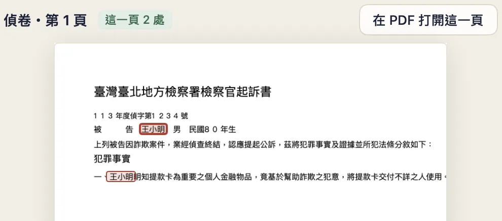
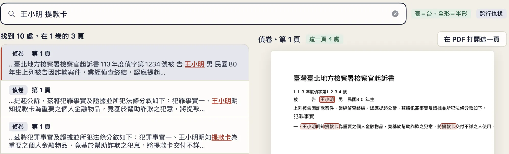

幾卷一起找關鍵字：全文搜尋教學
要確認某個名字或某個詞出現在卷裡的哪幾頁，PDF 閱讀程式一次只能搜一份，掃描頁也搜不到。「全文搜尋」把幾卷放在一起，掃描頁先辨識文字，台與臺、全形與半形、斷成兩行的詞都找得到。這個工具不產生檔案。
這個工具做什麼
「全文搜尋」在首頁的「讀卷」那一組。放入一卷或幾卷卷證，輸入關鍵字，列出每一處出現在哪一卷第幾頁，附前後文；點一筆，右邊顯示那一頁，命中的位置框起來。
- 台與臺、全形與半形視為相同；被換行斷開的詞也找得到。
- 掃描頁會先辨識文字再搜尋。
- 不產生任何檔案。搜尋用的資料存在這台裝置上，可以隨時清除。
這篇用合成的示範卷「偵卷.pdf」「院卷.pdf」說明。放入 PDF 的方法與共通的部分，在第一次使用那篇。
第一步：放入要搜尋的卷
從首頁或側邊欄點「全文搜尋」（Mac 也可以按 ⌘4），把 PDF 拖進虛線框，或按「選擇檔案…」。可以一次放好幾卷，一起搜尋。
有開啟密碼的卷，放進來時會就地問密碼。這個工具沒有「卷宗簡稱」欄位，結果清單用檔名當卷名（不含 .pdf，太長時只取前 14 個字），例如「偵卷」。之後要加卷，按右上角的「再放一卷」，或把 PDF 拖進視窗。
建立搜尋資料
放進來後，App 會自動建立搜尋資料，不用按任何按鈕。建立中顯示「正在建立搜尋資料」、百分比與進度條，可以按「停止」；停止後，還沒建好的卷會從清單拿掉。
- 有文字的頁很快。掃描頁要先辨識文字，每頁約零點幾秒到幾秒，頁數多時要等一下。
- 建好之後，同一卷下次放進來不用再建，直接載入。
- 建立失敗時會顯示「搜尋資料沒有建好」與原因，可以按「再試一次」。
建好之後，右上角寫著「N 卷・N 頁，已建好搜尋資料」。
輸入關鍵字
在上面的欄位輸入關鍵字，打字時就會開始找，不用按 Return。左邊上方寫著「找到 N 處，在 N 卷的 N 頁」，下面每一筆是一處，寫著卷名、頁碼與前後文，關鍵字畫紅線。按欄位右邊的清除鍵（圓圈裡的 ×）清掉關鍵字。
左邊：每一處的前後文
右邊：那一頁

要同時找幾個詞，用空白隔開（半形或全形空白都可以）。這時同一頁每個詞都要出現才會列出，兩個詞都會畫線、框起來。

找不到時顯示「找不到「…」」，下面寫「換個寫法試試；掃描頁辨識錯的字會找不到。」
一次最多列出 2,000 處。超過時會寫「找到 2,000 處以上」，請加一個詞縮小範圍。
看命中的那一頁
點左邊的一筆，右邊顯示那一頁，上方寫著卷名與頁碼，旁邊的綠色標籤是「這一頁 N 處」。這一頁所有命中的地方都用紅框標出，點到的那一處框比較粗。第一次出現結果時，上面會有一張提示卡，按「知道了」就收起來。
要看前後頁或整份，按右上角的「在 PDF 打開這一頁」，會打開整份 PDF 並捲到那一頁，看完按「關閉」。
注意頁碼是 PDF 的頁碼（第幾頁），不是卷面上印的頁碼。卷面頁碼不同時，請自己換算。
搜尋資料存在哪裡、怎麼清除
搜尋資料存在這台裝置上 App 自己的資料夾，內容是卷證每一頁的文字，敏感程度等同卷證本身，不會上傳。有開啟密碼的卷，搜尋資料不存，每次放進來都重新建立。
要查看大小或清除，到側邊欄最下面的「關於」，「資料」區塊有「全文搜尋的搜尋資料」，寫著幾卷、多大、存在哪裡。按「清除」，確認後就刪掉全部的搜尋資料。卷證 PDF 本身不會被刪除；清除後，下次搜尋同一卷會重新建立。
在 iPhone・iPad 上
步驟相同。在 iPhone 上，結果列在搜尋欄下面，點一筆會整頁顯示那一頁，找到的字用紅框標出；那一頁下方有「在 PDF 打開這一頁」。「再放一卷」在畫面下方。打字時鍵盤不會遮住搜尋欄，結果清單縮在鍵盤上面。這個工具不產生檔案，所以沒有輸出步驟，也沒有讀秒廣告。iPhone・iPad 版的畫面在iPhone・iPad 介紹頁。
做不到的事／要注意
- 掃描頁靠文字辨識，辨識錯的字找不到。重要的詞，可以換個寫法或只搜其中兩三個字再試。
- 只比對字面。同音字、不同寫法的名字不會當成同一個詞：示範卷院卷第 2 頁寫的是「王曉明」，搜「王小明」不會列出那一頁。
- 不能用 AND／OR、萬用字元或正規表示式；空白隔開的幾個詞一律是「同一頁都要有」。
- 不產生檔案，也不會在原本的 PDF 裡加上標記。想讓掃描檔在其他程式裡也能搜尋，用「可搜尋 PDF」。
下一篇：把卷證轉成文字檔：PDF 轉 Markdown 教學。上一篇是供述切割。簡短的步驟在使用說明。
常見問題
全文搜尋的資料存在哪裡？
存在這台裝置上 App 自己的資料夾，內容等同卷證的文字，不會上傳。可以在 App 的「關於」查看大小並清除；清除不會刪掉卷證 PDF。
掃描的卷證搜得到嗎？
搜得到。放進來時會先辨識文字再建立搜尋資料。辨識錯的字找不到，掃描品質差的頁面請換個寫法再試。
幾個詞要怎麼一起找？
用空白隔開，例如「王小明 提款卡」。同一頁每個詞都出現才會列出。